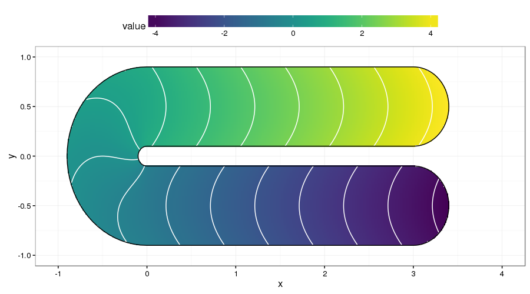
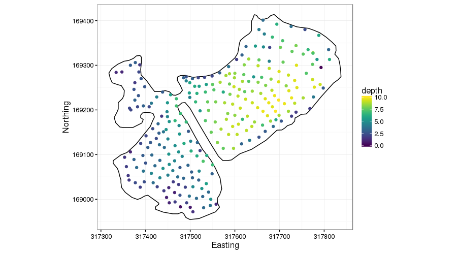
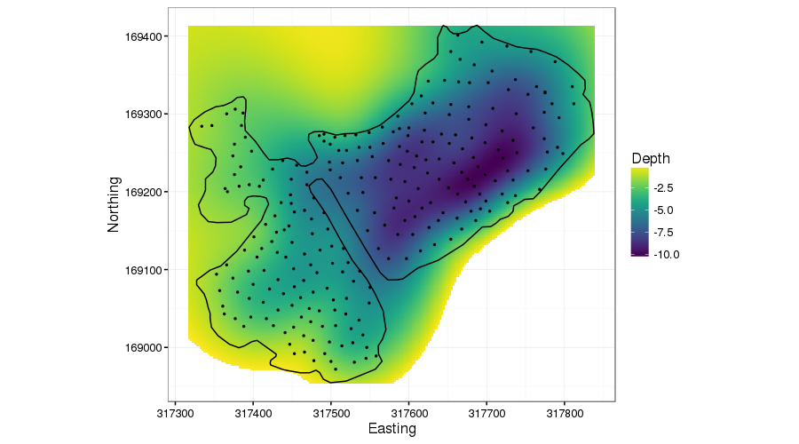
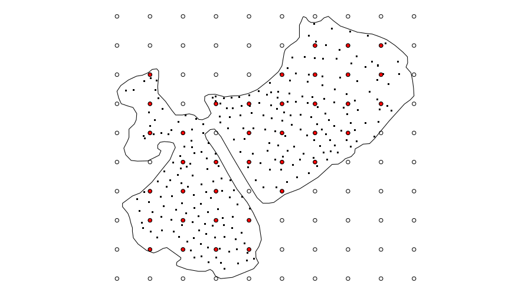
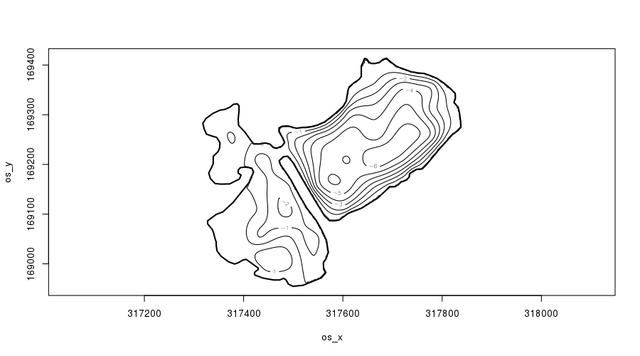
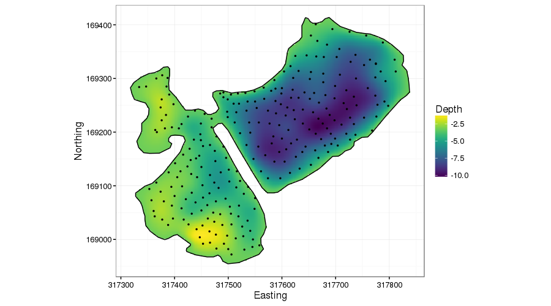
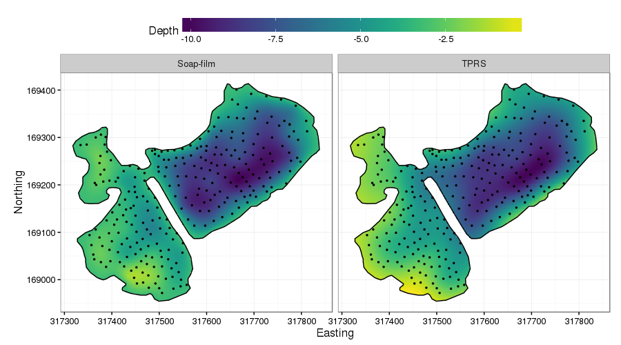

Soap-film smoothers & lake bathymetries
Posted in
Tagged
GAM Soap-film Smoother Spline Spatial Finite area Smoothing Lake Bathymetry
Blogroll
A number of years ago, whilst I was still working at ENSIS, the consultancy arm of the ECRC at UCL, I worked on a project for the (then) Countryside Council for Wales (CCW; now part of Natural Resources Wales). I don’t recall why they were doing this project, but we were tasked with producing a standardised set of bathymetric maps for Welsh lakes. The brief called for the bathymetries to be provided in standard GIS formats. Either CCW’s project manager or the project lead at ENSIS had proposed to use inverse distance weighting (IWD) to smooth the point bathymetric measurements. This probably stemmed from the person that initiatied our bathymetric programme at ENSIS being a GIS wizard, schooled in the ways of ArcGIS. My involvement was mainly data processing of the IDW results. I was however, at the time, also somewhat familiar with the problem of finite area smoothing2 and had read a paper of Simon Wood’s on his then new soap-film smoother (Wood et al., 2008). So, as well as writing scripts to process and present the IDW-based bathymetry data in the report, I snuck a task into the work programme that allowed me to investigate using soap-film smoothers for modelling lake bathymetric data. The timing was never great to write up this method (two children and a move to Canada have occurred since the end of this project), so I’ve not done anything with the idea. Until now…
In this post, I want to introduce the concept of finite area smoothing and illustrate the use of soap-film smoothers in modelling lake bathymetric data.
Finite area smoothing
Often, we seek to model a response over a well-defined region with a known boundary. This problem is known as finite area smoothing, or as Ramsay put it, smoothing over difficult regions (2002). Why this problem is more difficult than it sounds is well illustrated by the test function introduced by Ramsay (2002) a version of which is shown below3.
library("mgcv")
fsb <- fs.boundary()
m <- 300
n <- 150
xm <- seq(-1, 4, length = m)
yn <- seq(-1, 1, length = n)
xx <- rep(xm, n)
yy <- rep(yn, rep(m, n))
tru <- matrix(fs.test(xx, yy), m, n) ## truth
truth <- data.frame(x = xx, y = yy, value = as.vector(tru))
library("ggplot2")
library("viridis")
theme_set(theme_bw())
p <- ggplot(truth, aes(x = x, y = y)) +
geom_raster(aes(fill = value)) +
geom_contour(aes(z = value), binwidth = 0.5, colour = "white") +
geom_path(data = as.data.frame(fsb), aes(x = x, y = y)) +
scale_fill_viridis(na.value = NA) +
theme(legend.position = "top", legend.key.width = unit(2.5, "cm"))
p
The domain of the test is a rotated U shape. Each stem of the U has quite different values of the response, achieved by smoothly varying the response along the U itself. Between the two stems is a barrier in the spatial domain. Smoothing across this barrier would bleed information from one side to the other, which would lead to poorly predicted values. One solution to the problem of smoothing inside domains such as the one shown is to smooth only considering distances between points within the domain, not distances over some bounding box of the problem. In other words, we shouldn’t assume points either side of the barrier in the test function are similar just because they are closely located in the y coordinate.
Soap-film smoothers
Bubble artists can do some amazing things with a few props and copious amounts of soapy solutions. If you’ve ever seen a bubble artist perform, you’ll never look at the little bottles of bubbles that kids use to blow simple round bubbles in the same way again. Whilst soap-film smoothers aren’t quite as amazing as the soapy wonders produced by bubble artists, how they work is directly related to one form of bubble art4.
If we start from the simple kids-toy version for blowing round bubbles, then you’ll know that there is a small loop within which an exceedingly thin film of soapy liquid is contained. Blowing through the loop deforms the soapy film, and if you blow gently, eventually you can deform the film enough that it detaches from the loop and forms a perfect, iridescent, soapy ball of fun5. Bubble artists employ more complex loops, but the principle remains the same and in practice, this is exactly how soap-film smoothers work.
Return for a moment to Ramsay’s test function shown above. The loop is formed by the boundary of the domain. Imagine a soapy film suspended within this loop, and further imagine that we can somehow blow over the region to deform the film in such as way as to move the film towards the data. In the test function above, we’d need to “blow” on the film so that it deformed towards us in the upper stem of the U, and away from us in the lower stem (assuming that we’re mapping the data values to the z coordinate.) Quite a lot of complexity underlies exactly how the soap-film smoother achieves this, but the general principle is exceedingly simple.
Soap-film smoothers comprise two separate types of smoother; one for the boundary and one for the film itself. The boundary smoother is often a cyclic spline in order to have the ends of the spline join nicely at the “end points” of the boundary. If the value of the response at the boundary is known, such as lake depth being zero at the margin of the lake, then the boundary can be fixed at these values without needing a spline to model values on the boundary. If the response is not known at the boundary, it can be estimated using the boundary spline.
Lake bathymetric data
What do soap films have to do with lake bathymetric data? Basically because the problem of modelling depth soundings is exactly the same as that illustrated by Ramsay’s test function. We have a well defined boundary6, and all but the most simple lakes have shoreline features that we don’t want to smooth across, such as peninsulars7.
The figure below shows lake depth soundings from the Comeston Park Lakes, two now-flooded former quarries joined by a narrow channel.
library("rgdal")
## Update this if I can post the Comeston data
dataDIR <- "/home/gavin/work/projects/ccw/data/CCW_Final_Data/42721_Cosmeston_Park/."
outline <- readOGR(dataDIR, "42721_Cosmeston_Lake_lake_polyline")
depth <- readOGR(dataDIR, "d17_42721_xyz")
foutline <- fortify(outline)
fdepth <- data.frame(depth)
ggplot(foutline, aes(x = long, y = lat)) +
geom_path() +
geom_point(data = fdepth, aes(x = os_x, y = os_y, colour = depth)) +
coord_fixed() + ylab("Northing") + xlab("Easting") +
scale_color_viridis()
This example is very similar to that of Ramsay’s test function. We don’t want to smooth across the narrow peninsular because there is no reason to presume the bed topography is the same on either side.
Additive models for lake bathymetry data
If we weren’t worried about the boundary, we could use a thin plate spline smoother (TPRS) to model how depth varies spatially. The TPRS basis is perfect for this as the x y data are in the same units. Hence a simple GAM would seem OK, if were weren’t worried about those pesky boundaries.
The wrong thing then would be to do the following, here not using the lake boundary information of zero depths.
library("mgcv")
crds <- coordinates(outline)[[1]][[1]]
tprs <- gam(-depth ~ s(os_x, os_y, k = 60), data = depth, method = "REML")
summary(tprs)Family: gaussian
Link function: identity
Formula:
-depth ~ s(os_x, os_y, k = 60)
Parametric coefficients:
Estimate Std. Error t value Pr(>|t|)
(Intercept) -5.35075 0.07813 -68.49 <2e-16 ***
---
Signif. codes: 0 '***' 0.001 '**' 0.01 '*' 0.05 '.' 0.1 ' ' 1
Approximate significance of smooth terms:
edf Ref.df F p-value
s(os_x,os_y) 41.45 51.06 19.08 <2e-16 ***
---
Signif. codes: 0 '***' 0.001 '**' 0.01 '*' 0.05 '.' 0.1 ' ' 1
R-sq.(adj) = 0.787 Deviance explained = 82%
-REML = 491.88 Scale est. = 1.6175 n = 265
The fitted smoother uses about 40 degrees of freedom, and explains about 80% of the variance in the observed depths. To visualise the fitted surface, I create a data set of x and y coordinates over the bounding box of the spatial data. At this stage I’m not going to remove any of the points for prediction that are outside the lake as I want to show what the TPRS smoother is doing. The code basically
- sets up a 2.5 meter-resolution grid in the x and y directions
- predicts from the model at each location
- creates a temporary version of the predictions, setting all depths > 0 to
NA, which removes some distracting behaviour far from the support of the observations.
grid.x <- with(tprs$var.summary,
seq(min(c(os_x, crds[,1])), max(c(os_x, crds[,1])), by = 2.5))
grid.y <- with(tprs$var.summary,
seq(min(c(os_y, crds[,2])), max(c(os_y, crds[,2])), by = 2.5))
pdata <- with(tprs$var.summary, expand.grid(os_x = grid.x, ox_y = grid.y))
names(pdata) <- c("os_x","os_y")
##predictions
pdata <- transform(pdata, Depth = predict(tprs, pdata, type = "response"))
tmp <- pdata # temporary version...
take <- with(tmp, Depth > 0) # getting rid of > 0 depth points
tmp$Depth[take] <- NAThe TPRS fitted surface is plotted with the observed data using
ggplot(foutline, aes(x = long, y = lat)) +
geom_raster(data = tmp, aes(x = os_x, y = os_y, fill = Depth)) +
geom_path() +
geom_point(data = fdepth, aes(x = os_x, y = os_y), size = 0.5) +
coord_fixed() + ylab("Northing") + xlab("Easting") +
scale_fill_viridis(na.value = NA)
I’ve purposely done a poor visualisation job8 in the above figure as I wanted to show how the TPRS smoother bleeds information across the peninsular. Ignore the predictions off into the top left & bottom right: concentrate on the peninsular. The TPRS spline is smoothing depth across this region, exactly what we don’t want. It’s almost as if the peninsular isn’t there.
Next we’ll fit the soap-film smoother version. I’ll take this one a bit slower as we have some work to do to set up the boundary and knot locations that the smoother needs.
For lake bathymetries we have two set-up jobs to complete
- create a boundary object, with known value of
0 - choose the number of knots and their locations over the domain of interest
The second is, in my experience, most easily achieved by using the list form of the allowed options for the boundary9. The list form for the boundary is a list within a list. Each sublist has at least two elements containing the x and y coordinates of the boundary polygon. A component f may also be included, which sets the boundary condition at each location; here we set this to 0 to indicate the depth tends to 0 at the lake shore. In the code below I create this from the coordinates() object created earlier.
bound <- list(list(x = crds[,1], y = crds[,2], f = rep(0, nrow(crds))))Choosing the number and location of knots is trickier, especially if you are trying to automate this for a large number of lakes. The key requirement is that any knots are contained entirely within the lake boundary. mgcv provides the inSide() function to facilitate this. Unfortunately inSide() doesn’t provide exactly the same check for being inside the boundary as the one used by the soap-film smooth constructor called when you fit the model. The procedure I outline below is the one I’ve found most useful to date, but I make no guarantee that it is optimal nor that it will work for your data problem10.
Here I choose to create a 10 by 10 regular grid of locations over the bounding box of the coordinates. From this grid I retain those points that are contained within the lake boundary.
N <- 10
gx <- seq(min(crds[,1]), max(crds[,1]), len = N)
gy <- seq(min(crds[,2]), max(crds[,2]), len = N)
gp <- expand.grid(gx, gy)
names(gp) <- c("x","y")
knots <- gp[with(gp, inSide(bound, x, y)), ]
names(knots) <- c("os_x", "os_y")
names(bound[[1]]) <- c("os_x", "os_y", "f")The last two lines set boundary and knots names to match the variable names on the depth data used to fit the model.
The choice of 10 for the sides of the grid is useful here as that puts enough points within the lake for the knots of the smoother, but doesn’t require any nudging of the grid to get the selected points to fall nicely within the boundary. In other examples, I’ve needed to tailor the number of points in the grid and shift it by a few meters to get as many of the regular points to fall inside the boundary. You may even find that you need to locate the knots individually. Using locator() after plotting the lake outline is an expedient — but entirely manual — way to do this if you have too.
What this process looks like is shown in the figure below

Fitting the soap-film model is quite similar to any other GAM you may have fitted with mgcv. The main exception is that you have to pass something to the xt argument of s(). If you delve into some of the more complex smoothers that have become available in mgcv in recent releases, you’ll find yourself using xt a lot as it is the way to pass extra information to the basis constructor functions.
For soap-film smoothers you must pass xt a list with component bnd set to an appropriate boundary object — here bound as created earlier. The knots that were created earlier need to be passed to the knots argument. The full call to gam() is shown below; the soap-film basis is specified using bs = "so".
m2 <- gam(-depth ~ s(os_x, os_y, bs = "so", xt = list(bnd = bound)),
data = depth, method = "REML", knots = knots)The soap-film smoother explains just over 75% of the variance in the data, using just under 30 degrees of freedom. It doesn’t explain quite as much variance as the TPRS model I looked at earlier, but is substantially simpler in terms of degrees of freedom (~30 vs ~40 respectively).
summary(m2)Family: gaussian
Link function: identity
Formula:
-depth ~ s(os_x, os_y, bs = "so", xt = list(bnd = bound))
Parametric coefficients:
Estimate Std. Error t value Pr(>|t|)
(Intercept) -3.275 0.204 -16.05 <2e-16 ***
---
Signif. codes: 0 '***' 0.001 '**' 0.01 '*' 0.05 '.' 0.1 ' ' 1
Approximate significance of smooth terms:
edf Ref.df F p-value
s(os_x,os_y) 27.27 38 19.95 <2e-16 ***
---
Signif. codes: 0 '***' 0.001 '**' 0.01 '*' 0.05 '.' 0.1 ' ' 1
R-sq.(adj) = 0.742 Deviance explained = 76.8%
-REML = 501.32 Scale est. = 1.9607 n = 265
Soap-film GAMs come with their own plot() method
lims <- apply(crds, 2, range)
ylim <- lims[,2]
xlim <- lims[,1]
plot(m2, asp = 1, ylim = ylim, xlim = xlim, se = FALSE, scheme = 2, main = "")
plot.gam() with scheme = 2.Notice how the contours of the fitted soap-film surface are parallel to the peninsular shoreline — as we’d expect if we studied lakes. We’ll return to this momentarily.
As we aren’t in the business of drawing pictures11
If you want to draw pictures, base graphics is better than ggplot2. But most people don't want to draw pictures with #rstats
— Hadley Wickham (@hadleywickham) March 22, 2016
I should plot the fitted model using ggplot(). Note that the predict() step here is slow — I could probably speed it up a lot by removing all the points that are outside the lake boundary (see below) because we already know those points will be NAs and just hence dropped from any plotting or subsequent analysis.
pdata2 <- transform(pdata[, 1:2], Depth = predict(m2, newdata = pdata))
ggplot(foutline, aes(x = long, y = lat)) +
geom_raster(data = pdata2, aes(x = os_x, y = os_y, fill = Depth)) +
geom_path() +
geom_point(data = fdepth, aes(x = os_x, y = os_y), size = 0.5) +
coord_fixed() + ylab("Northing") + xlab("Easting") +
scale_fill_viridis(na.value = NA)
The first thing to notice is that the predict() method automatically sets points outside the boundary to NA for soap-film smoother models: you have to do this manually with the other types of smoother.
The main improvement in the soap-film model is the performance of the fitted depth surface around the peninsular. Notice now how on the right of the peninsular, the depth lessens towards the shoreline, and on the left depth increases from 0 away from the peninsular. Importantly, however, the deeper points on the right are not leaking information across the peninsular.
We could have achieved a better fit with the TPRS model by including the boundary coordinates with the depth data with depths 0. This would have improved the performance around the edge of the lake, but it wouldn’t have had the same effect as the soap-film smoother around the peninsular. Why so? Well, in the soap-film, we set the values of the boundary to be zero and the soap-film smooths from the data points to those known values but won’t smooth across the boundary of the domain. The TPRS model however would treat the 0 depth values differently: in simple terms it will smooth through the values, not to them. Hence the spline will get pulled towards zero somewhat, but the spline will still be “averaging” the depth data from a local region around the peninsular, information which includes the deeper data we don’t want to leak.
To help compare the two surfaces, I do a little more data munging to remove TPRS points outside the lake boundary and combine them with the soap-film data.
inlake <- with(pdata, inSide(bound, os_x, os_y))
pdata <- pdata[inlake, ]
pdata2 <- transform(rbind(pdata, pdata2),
Model = rep(c("TPRS", "Soap-film"),
times = c(nrow(pdata), nrow(pdata2))))
## let's drop the NAs from the Soap-film too...
take <- with(pdata2, !is.na(Depth))
pdata2 <- pdata2[take, ]
poutline <- transform(rbind(foutline, foutline),
Model = rep(c("TPRS", "Soap-film"), each = nrow(foutline)))
names(poutline)[1:2] <- c("os_x", "os_y")
ggplot(poutline, aes(x = os_x, y = os_y)) +
geom_raster(data = pdata2, aes(x = os_x, y = os_y, fill = Depth)) +
geom_path() +
geom_point(data = fdepth, aes(x = os_x, y = os_y), size = 0.5) +
coord_fixed() +
ylab("Northing") + xlab("Easting") +
scale_fill_viridis(na.value = NA) +
facet_wrap( ~ Model) +
theme(legend.position = "top", legend.key.width = unit(2.5, "cm"))
The effect is subtle in these plots, but the differences between the two are clear. Most important, the leakage of information across the peninsular, clearly visible in the TPRS model is removed in the soap-film version.
Soap-film smoothers are not the only way to approach finite area smoothing. David Miller did his PhD with Simon Wood and developed the generalised distance spline approach to the finite area smoothing problem (Miller and Wood, 2014), and Ramsay introduced his FELSPLINE method (Ramsay, 2002). I’ve not had chance to investigate David’s generalised distance spline method yet but if I do, I’ll no doubt write a post comparing the results with the soap-film method.
References
References
Footnotes
smoothing over a domain with known boundaries, like a lake↩︎
smoothing over a domain with known boundaries, like a lake↩︎
See the example in
?fs.testafter loading package mgcv↩︎and soap-film smooths are pretty damn cool all the same!↩︎
or a soapy, sticky mess depending upon your point of view…↩︎
ignoring the fact that lake levels often rise and fall through the year or over years.↩︎
because topography↩︎
I should have removed all prediction points outside the lake as these are very far from the support of the data.↩︎
The other form is a list with sub-data frame(s), each data frame is a separate loop.↩︎
It is probably worth trying a range of knots and varying their locations if you are taking this very seriously.↩︎
Sorry Hadley, I couldn’t resist.↩︎
Social